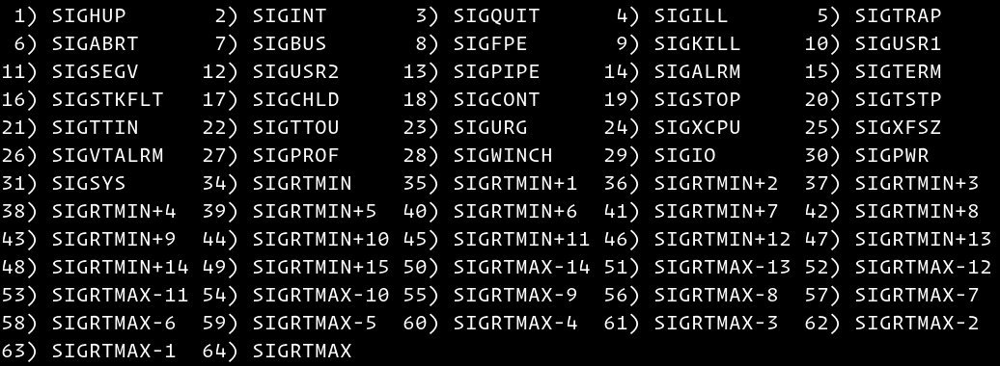

Linux中的 Kill 命令
Linux 是一个很棒的高级操作系统，但并不是完美的。有时，某些应用程序可能会开始出现异常行为，并变得无响应或开始消耗大量系统资源。无法响应的应用程序无法重新启动，因为原始应用程序进程永远不会完全关闭。唯一的解决方案是重新启动系统或终止应用程序进程。
有几种命令可让您终止最常使用的错误进程。
kill 命令
kill 是大多数 Bourne 衍生的 shell( 例如 Bash 和 Zsh) 中内置的 shell 。 Shell 中的 kill 和独立 /bin/kill 可执行文件之间的命令行为略有不同。
使用 type 命令显示系统上的 kill 的所有位置，其中包括：
type -a kill
kill is a shell builtin
kill is /bin/kill
上面的输出表明，内置的 shell 的 kill 优先于独立的可执行文件。如果要使用二进制文件，请输入文件的完整路径 /bin/kill 。在本文中，我们将使用内置的 Bash 。
该 kill 命令的语法采用以下形式：
kill [OPTIONS] [PID]..
该 kill 命令将信号发送到指定的进程或进程组，使它们根据该信号进行操作。未指定信号时，默认为 -15(-TERM) 。
最常用的信号是：
1`(HUP`) - 重新加载进程。9`(KILL`) - 终止进程。15`(TERM`) - 正常停止进程。
要获取所有可用信号的列表，请使用 -l 选项调用命令：
kill -l

可以用三种不同的方式指定信号：
- 使用数字(例如
-1或-s 1) 。 - 使用 “SIG” 前缀(例如
-SIGHUP或-s SIGHUP) 。 - 没有 “SIG” 前缀(例如
-HUP或-s HUP) 。
以下命令的作用是相同的：
kill -1 PID_NUMBER
kill -SIGHUP PID_NUMBER
kill -HUP PID_NUMBER
提供给 kill 命令的 PID 可以是以下之一：
- 如果
PID大于零，则将信号发送到 ID 等于PID的进程。 - 如果
PID等于零，则将信号发送到当前进程组中的所有进程。换句话说，该信号将发送到属于调用kill命令的外壳程序的 GID 的所有进程。使用ps -efj命令查看进程组 ID(GID) 。 - 如果
PID等于-1，则信号以与用户调用命令相同的 UID 发送到所有进程。如果调用用户是 root 用户，则信号将发送到除 init 和kill进程本身之外的所有进程。 - 如果
PID小于-1，则将信号发送到 GID 等于PID的绝对值的进程组中的所有进程。
普通用户可以将信号发送到自己的进程，但不能发送信号给其他用户，而根用户可以将信号发送到其他用户的进程。
使用 kill 命令终止进程
要使用 kill 命令终止进程，首先需要找到进程 ID 号 (PID) 。为此，您可以使用不同的命令，例如 top ， ps ， pidof 和 pgrep 。
假设 Firefox 浏览器已无响应，并且您需要终止 Firefox 进程。要查找浏览器的 PID ，请使用以下 pidof 命令：
pidof firefox
该命令将打印所有 Firefox 进程的 ID ：
6263 6199 6142 6076
一旦知道了进程号，就可以通过发送 TERM 信号来终止所有进程号：
kill -9 6263 6199 6142 6076
您可以将上述命令组合为一个命令，而不是先搜索 PID 然后终止进程。
kill -9 $(pidof firefox)å
使用 kill 命令重新加载进程
另一个常见用例 kill 是发送 HUP 信号，该信号告诉进程重新加载其设置。
例如，要重新加载 Nginx ，您需要向主进程发送一个信号。 Nginx 主进程的进程 ID 可以在 nginx.pid 文件中找到，该文件通常位于 /var/run 目录中。
使用 cat 命令查找主 PID ：
cat /var/run/nginx.pid
30251
一旦找到主 PID ，请输入以下内容重新加载 Nginx 设置：
sudo kill -1 30251
上面的命令必须以 root 用户或具有 sudo 特权的用户身份运行。
结论
kill 命令用于向进程发送信号。最常用的信号是 SIGKILL 或 -9 ，它直接结束给定的进程。